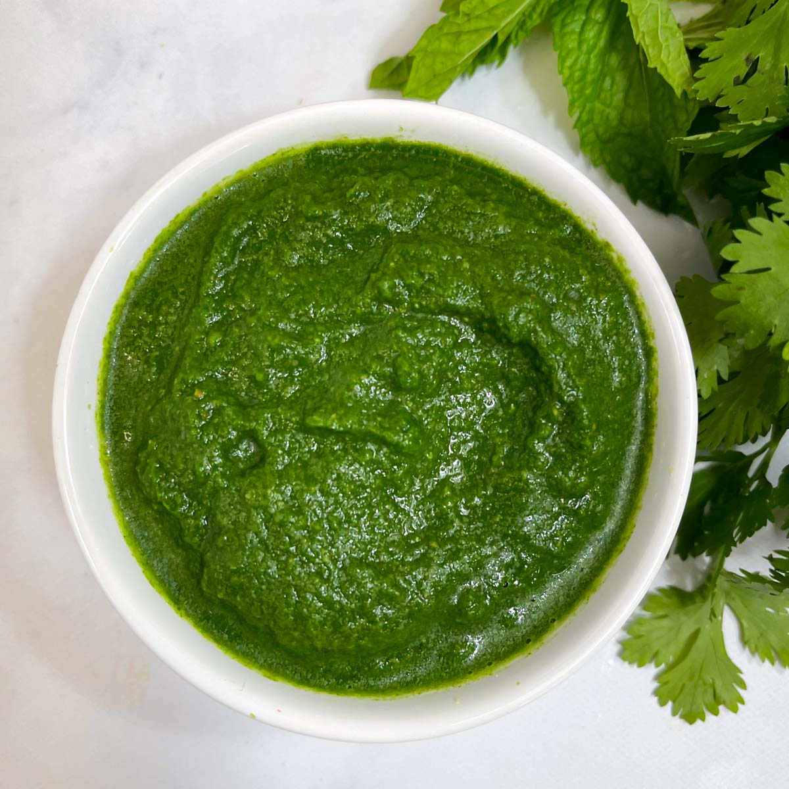

Fresh Mint Chutney Recipe

Ingredients:
- 2 cups fresh mint leaves
- 1 cup fresh coriander (cilantro) leaves
- 2-3 green chilies (adjust to taste)
- 1 small onion, roughly chopped
- 2 cloves of garlic
- 1 inch piece of ginger
- Juice of 1 lemon
- Salt to taste
- 2-3 tablespoons water (as needed)
Instructions:
- Wash the mint and coriander leaves thoroughly and pat them dry.
- Roughly chop the green chilies, onion, garlic, and ginger.
- In a blender or food processor, combine all the ingredients except water.
- Pulse a few times to chop everything coarsely.
- Add 1-2 tablespoons of water and blend to a smooth paste. Add more water if needed to achieve desired consistency.
- Taste and adjust salt and lemon juice as per your preference.
- Transfer the chutney to a serving bowl.
- Serve immediately with snacks, or store in an airtight container in the refrigerator for up to 3-4 days.